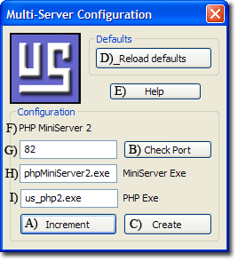

Multi-Servers
Multi-servers enable you to run more than one copy of The Uniform Server PHP MiniServer on the same PC. Moving servers to a different ports also allows you to run The Uniform Server PHP MiniServer alongside other servers such as IIS. This page details the changes made when the Multi-servers menu is invoked.
Multi Servers
|
Multi-servers enables you to run more than one copy of The PHP MiniServer on the same PC.
To achieve this, the executables are renamed and the port the server runs on is changed.
- When the menu opens current server values are displayed.
- A) Click "Increment" button untill the Server name F) is unique.
- You can revert to defaults by clicking button "Reload defaults" D)
- B) Test port status click "Check port" this displayes free to use.
- If in use, change the port value in edit box G)
- Repeat B) until an unused port is located.
- B) Click "Create"
- Values are overwritten in their corresponding configurations files.
- Menu and tray names reflect new server number.
- Menu is restarted with new values.
Note 1: Text box G) is editable while boxes H) and I) are ready only.
|

|
Note 2: Ideally you would run this menu on a newly extracted copy of The PHP MiniServer and then add any applications using appropriate configuration parameters.
Files modified
After running Multi-servers the following file is updated:
|
Mini Controller
- C:\UniServerMini\core\mini_server_config\mini_config.ini
|
After running Multi-servers the following executables are renamed. Note: XX is new digit or number appended to executable name.
- C:\UniServerMini\phpMiniServer1.exe to C:\UniServerMini\phpMiniServerXX.exe
- C:\UniServerMini\core\php\us_php1.exe to C:\UniServerMini\core\php\us_phpXX.exe
|